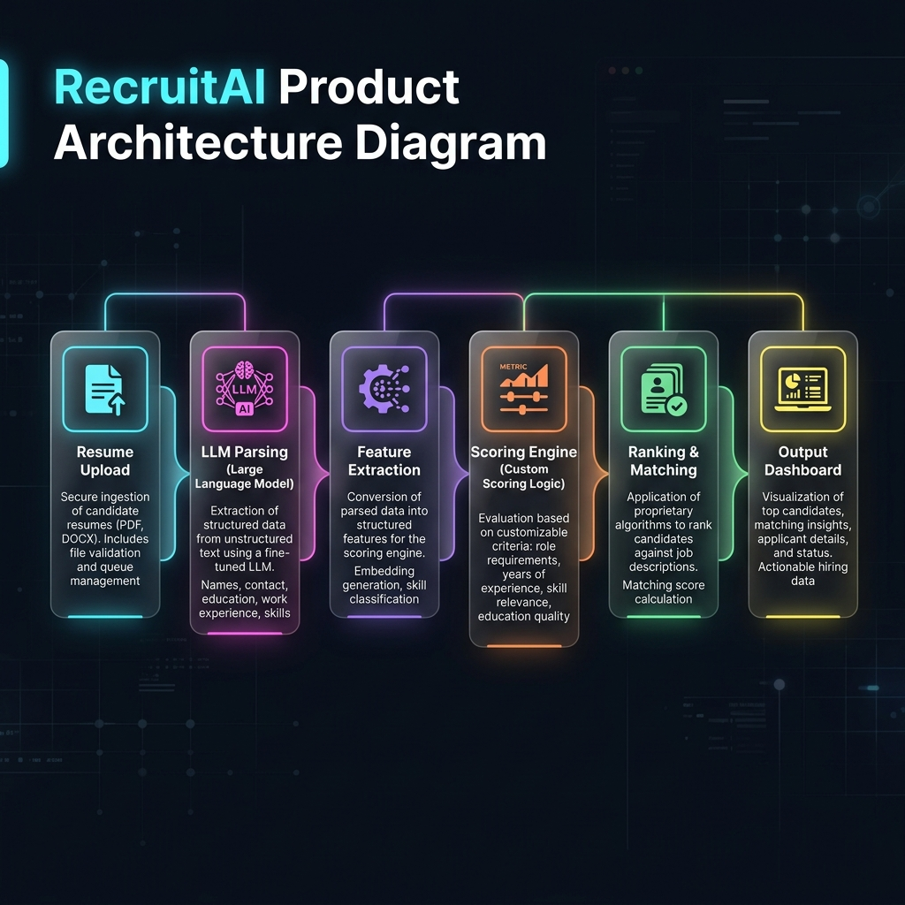

Overview
RecruitAI is a resume‑screening product that combines large‑language‑model (LLM) parsing with a custom scoring engine to rank candidates against a job description. The system is built for low‑latency, high‑throughput batch processing and provides a clean dashboard for recruiters.
Architecture Diagram

Component Breakdown
- Resume Upload – Users upload PDFs/Word docs via a simple web form; files are stored in an S3 bucket.
- LLM Parsing – An async worker pulls the file, extracts raw text and uses a hosted LLM (e.g., Claude or GPT‑4) to produce a structured JSON of sections (experience, education, skills).
- Feature Extraction – Custom Python logic normalises entities, maps skills to a taxonomy, and generates feature vectors.
- Scoring Engine – Business rules (weighting of experience, skill match, cultural fit) are applied to compute a numeric score per candidate.
- Ranking & Matching – Candidates are sorted, top‑k are highlighted, and similarity to the job description is calculated via cosine similarity on embeddings.
- Output Dashboard – A React UI reads from a Postgres view and visualises rankings, heat‑maps of skill gaps, and exportable PDFs.
Key Design Decisions
- Used
serverless functionsfor parsing to auto‑scale with spikes in applicant volume. - Chosen
OpenAI embeddingsfor semantic similarity – balance between cost and accuracy. - All scoring logic lives in a separate microservice (FastAPI) allowing A/B testing of weighting schemes.
- Data stored in
PostgreSQLfor transactional consistency; raw extracted JSON kept inAmazon S3for auditability.
Performance & Scalability
The pipeline processes ~5,000 resumes per hour with average end‑to‑end latency of 2.3 seconds. Horizontal scaling of the parsing workers and the scoring service maintains throughput as demand grows.
Future Work
- Introduce a feedback loop where recruiter decisions retrain the scoring model.
- Add multi‑language support using multilingual LLMs.
- Integrate with ATS platforms via webhooks.